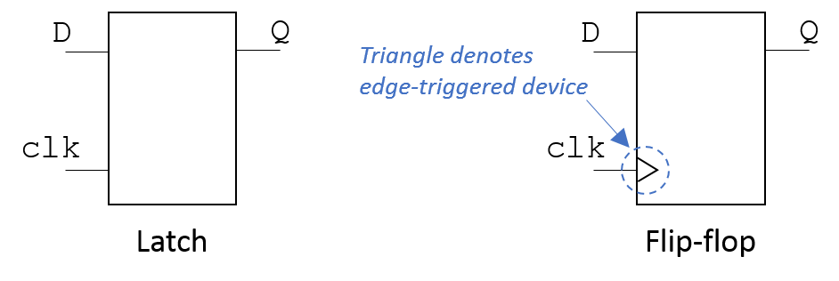
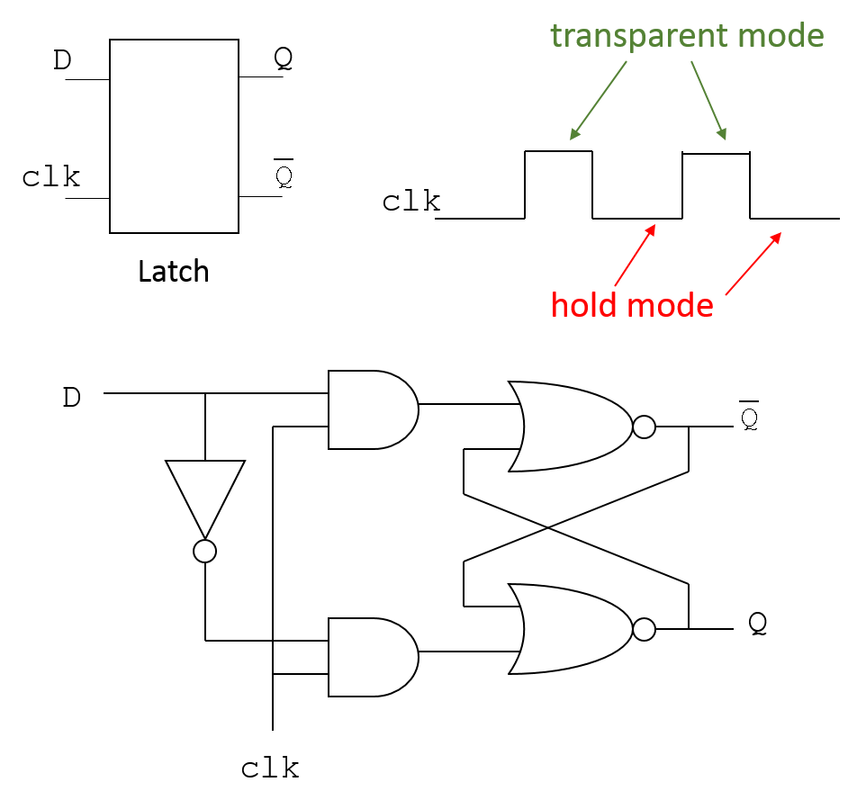
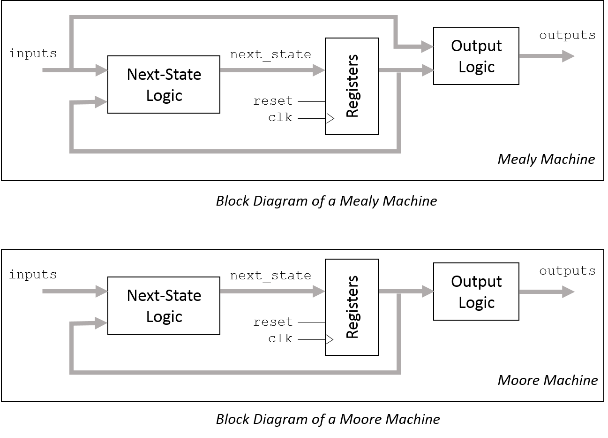

|
|
|
The learning objectives for this section are:
Digital logic gates can be classified into two types, combinational and sequential. In combinational (stateless) elements, the output is always driven by the current value of the inputs. Examples are the INVERTER, NOR, and NAND gates you encountered earlier. Sequential elements are basically memory elements; they update the output upon some predefined condition on a control signal being satisfied, and retain the value of the output at all other times, regardless of the value of the data input. They are sometimes also called state elements as they store the "state" of the circuit at any given point in time.
VHDL provides a rich variety of possibilities for implementing the functionality of a given memory element and inferring different types of logic gates by using a specific code template. We will start by looking at the fundamental memory elements used in sequential logic, the latch and the flip-flop. We will then model a finite-state machine (FSM) by designing a simple pattern recogniser in the next section.
The basic difference between a latch and a flip-flop is that a latch is a level-sensitive device, whereas a flip-flop is an edge-triggered device. Hence the output of a latch will be completely transparent to its input as long as the control signal is high (in a positive latch, or low in a negative latch), whereas the output of a flip-flop will depend only on the value of the input upon the rising edge (in a rising-edge-triggered flip-flop, or falling edge in a falling-edge-triggered flip-flop) of the control signal. The symbols of each are given in Fig. 5.1.

Shown in Fig. 5.2 is a D-latch built from a NOR-NOR implementation of an SR-Latch. As the timing diagram shows, this is a positive latch, where the input is copied to the output when the control signal (CLK) is high.

It is also possible to infer a latch much more simply using signal or variable assignment statements inside a process body.
An example of a level-sensitive latch using signal assignments is given below.
ENTITY dLatch IS
PORT (
d:IN STD_ULOGIC;
clk:IN STD_ULOGIC;
q:OUT STD_ULOGIC;
qPrim:OUT STD_ULOGIC);
END dLatch;
------------------------------------------------------
-- behavioural Implementation 1 ----------------------
------------------------------------------------------
ARCHITECTURE behav1 of dLatch IS
BEGIN
PROCESS(clk, d)
BEGIN
IF clk = '1' THEN
q <= d;
qPrim <= not d;
END IF;
END PROCESS;
END behav1;
------------------------------------------------------
Why does this code implement (infer) a latch? The general inference rule is that a latch is synthesized when a signal or variable is not assigned in all branches of an IF or CASE statement. In the above code, we don't specify what happens if CLK is '0'. The VHDL semantics imply that the value of q when it is not explicitly assigned in every possible selection branch has to be saved from one simulation cycle to another (this is exactly why we took pains to ensure that the output was driven in every single selection branch when implementing combinational logic earlier).
As the assignment is under the control of a level-sensitive condition (i.e., IF CLK = '1' THEN), a latch is inferred.
The following code uses a variable inside a process to infer a latch for the same entity.
------------------------------------------------------
-- behavioural Implementation 2 ----------------------
------------------------------------------------------
ARCHITECTURE behav2 of Dlatch IS
BEGIN
PROCESS(clk, d)
VARIABLE var_q : STD_ULOGIC;
BEGIN
IF clk = '1' THEN
var_q <= d;
END IF;
q <= var_q;
END PROCESS;
END behav2;
------------------------------------------------------
Here the variable var_q is used as internal storage. The two latch implementations above, with and without a variable, result in identical logic. Even though variables and signals are fundamentally different in that signal assignments always incur a delay, whereas variable assignments do not, the value of the variable is assigned to a signal at the end of the process, which has a delta delay. In this case, use of a variable has simply resulted in more verbose code.
A flip-flop can be inferred by an assignment within a process by using an edge-sensitive condition. For example, the following expression synthesises a flip-flop with an asynchronous low reset:
ENTITY ff IS
PORT (
d:IN STD_ULOGIC;
clk:IN STD_ULOGIC;
reset:in STD_ULOGIC;
q:OUT STD_ULOGIC;
qPrim:OUT STD_ULOGIC
);
END ff;
------------------------------------------------------
-- behavioural Implementation ------------------------
------------------------------------------------------
ARCHITECTURE behav of ff IS
BEGIN
PROCESS(clk, reset)
BEGIN
IF reset = '0' THEN
q <= '0';
qPrim <= '1';
ELSIF clk'EVENT AND clk='1' THEN
q <= d;
qPrim <= not d;
END IF;
END PROCESS;
END behav;
------------------------------------------------------
The ' sign, read as tick, specifies some attribute of an object. In this case, clk'EVENT is true when clk undergoes a transition from '0' to '1' or '1' to '0'. The condition clk'EVENT AND CLK='1' is therefore true for a rising edge of clk.
Note the differences from the implementation of the latch. The first is that there is an asynchronous reset function. Regardless of the value of clk, if reset is low, the output goes to '0'. The second difference is that we have specified a rising edge of the control signal in the synchronous conditional statement, and omitted to put the data input d in the sensitivity list. Outside of the reset, we are only assigning to the output upon a rising edge of clk, and therefore we don't need to trigger the process upon any events occurring on d. For edge-triggered logic components only the control signal and any asynchronous reset needs to be present in the sensitivity list.
For the edge condition, only ever use the edge of the clock, never some arbitrary signal. Otherwise, the crictial paths in logic blocks cannot be properly identified and managed. If the critical paths cannot be identified, various logic hazards occur, and the circuit can malfunction or behave differently at different times for different inputs.
You should design all sequential blocks using flip-flops only, and avoid latches at all costs. In other words, if you specify memory, always assign the value based on the clock edge, rather than the level of some arbitrary signal.
Why avoid latches? The short answer is they complicate timing, and cause logic hazards, as there is a timing window when the latches are transparent, and signals can propagate through multiple stages and potentially corrupt valid signals before they can be read. Flip-flops on the other hand update the output upon a rising (or falling) edge and therefore signals cannot propagate through multiple stages. Let's examine this issue in the following task.
It is often useful to have a clock enable, so that you can disable a flip-flop. Consider the following implementation of a down counter:
----some code for entity and architecture body
signal count: integer;
----some code
PROCESS(reset,clk)
BEGIN
IF reset = '1' THEN -- active high reset
count <= 0;
ELSIF clk'EVENT and clk='1' THEN
IF enCount = TRUE THEN -- enable
count <= count - 1;
END IF;
END IF;
END PROCESS;
Note that the implication of a flip-flop with an asynchronous active high reset is clear. But what about the conditional statement inside the clk'EVENT AND clk='1' condition? What value should be read if enCount = false? Having such an enable signal is also part of the standard template to infer a flip-flop, because most flip-flops have a clock-enable signal. If this enable signal is asserted, the flip-flop behaves normally, else the clock input is simply ignored. The Xilinx FPGAs we will target have flip-flops that have such a clock enable, and hence this code will instantiate one of those elements.
What you should avoid at all costs is implementing a clock-enable by gating the clock. A common error is shown below.
--------
myClk <= myClk_enable AND clk;
-------
While the idea behind this is reasonable, gating the clock in this way causes issues because the clock needs to have very well-defined upper and lower bounds on skew and jitter. Hence it is routed using some sort of balanced tree with various feedback paths. If you gate the clock, the output downstream of the gating structure is the output of an ordinary logic gate, which can affect timing across the chip. Generally, synthesis tools will produce a warning if it detects clock gating.
FSMs are an important class of sequential circuits, which are widely used in control functions. They describe a series of states in which the circuit can reside, and prescribe under what conditions the circuit can advance from one state to another. Depending on what state the FSM is in, certain signals are taken high or low, which serve as the control inputs that drive other parts of the system, such as enabling or disabling a combinational element. The FSM provides the "intelligence" to a system while the datapath carries out the computational work on data. We will start by looking at a simple example to understand FSMs in this section, and look at a more complete example in Section XX.
There are two widely used models for FSMs, the Mealy model and the Moore model. Block diagrams of both models are shown in Fig. 5.3.

Note how an FSM has both combinational and sequential logic. The registers are the state elements, i.e., they define states in binary form, by the bit pattern made up of the values at the outputs (Q) of the registers. The more complex the state machine and the greater the number of states required, the greater the number of registers required. The combinational logic blocks define the next state based on the current state and any inputs, and present the next state values on the inputs of the registers so they can update on the next clock edge. The difference between Mealy and Moore Machines is that in a Mealy machine the outputs are a function of the current state and the inputs, while in a Moore machine the outputs are a function solely of the current state.
A state transition diagram is a diagram-based method to define FSMs by showing the states in which they can reside, and the conditions upon which they advance to the next state. Examples of both types of state transition diagrams are shown in Fig. 5.4 where X and Y represent inputs and outputs respectively.
State transition diagrams are useful in conceptualising a design, and straightforward to do for small designs.
As a first example, we will implement a simple pattern recogniser using both Mealy and Moore FSMs. The pattern recogniser has a 1-bit input, 'x', with new data being available at each clock edge, a 1-bit output 'y', and an asynchronous reset which is active low. The output 'y' should go high when an input sequence of '1010' is detected at the output, and remains low otherwise. Once a complete sequence has been recognised, any bits that have been read are to be disregarded for the next sequence. This means that the final two bits '10' of the first sequence cannot count as the first two bits in a new sequence. As an example, the pattern '10101000' will result in 'y' going high only once, after the first four bits.
Both Mealy and Moore machines can be implemented in VHDL with a straightforward mapping of the logic blocks in Fig. 5.3 to separate processes; i.e., each logic block is described in its own PROCESS body. The VHDL template of a Mealy machine is given below.
-- Mealy Machine (mealy.vhd)
-- Asynchronous reset, active low
------------------------------------------------------
LIBRARY IEEE;
USE IEEE.STD_LOGIC_1164.ALL;
ENTITY recog1 is
PORT(
x: IN STD_ULOGIC;
clk: IN STD_ULOGIC;
reset: IN STD_ULOGIC;
y: OUT STD_ULOGIC);
END;
ARCHITECTURE arch_mealy of recog1 is
-- State declaration
TYPE state_type is (INIT, FIRST ....); -- List your states here
SIGNAL curState, nextState: STATE_TYPE;
BEGIN
combi_nextState: process(curState, x)
BEGIN
CASE curState IS
WHEN INIT =>
IF x='1' THEN
nextState <= FIRST;
ELSE
...... -- Fill in
......
END IF;
WHEN FIRST =>
IF x='0' THEN
nextState <= ? -- Fill in
ELSE
............? -- Fill in
END IF;
WHEN ............ -- Fill in
..............
END CASE;
END PROCESS; -- combi_nextState
-----------------------------------------------------
-----------------------------------------------------
combi_out: PROCESS(curState, x)
BEGIN
y <= '0'; -- assign default value
IF curState = THIRD AND x='0' THEN
y <= '1';
END IF;
END PROCESS; -- combi_out
-----------------------------------------------------
-----------------------------------------------------
seq_state: PROCESS (clk, reset)
BEGIN
IF reset = '0' THEN
curState <= INIT;
ELSIF clk'event AND clk='1' THEN
curState <= nextState;
END IF;
END PROCESS; -- seq
-----------------------------------------------------
-----------------------------------------------------
END; -- arch_mealy
The architecture basically has four sections, a state declaration section, and three processes that implement the functionality. Note the correspondence between the logic blocks of Fig. 5.3 and the processes in the code. The combinational and sequential blocks are expressed as separate VHDL processes. Do NOT mix combinational and sequential logic structures within the same process.
Consider the following example of badly-written code:
bad_example : PROCESS(clk, rst)
BEGIN
IF rst = '1' THEN
my_out <= '0';
ELSIF clk'EVENT and clk='1' THEN
CASE my_in IS
WHEN '00' => my_out <= '1';
when '01' => my_out <= '0';
when '10' => my_out <= '0';
when '11' => my_out <= '1';
END CASE;
END IF;
END PROCESS;
Why is this badly written? It mixes combinational and sequential logic blocks. If you want the functionality of a selector that updates its output synchronously as above, the correct way to write it is to separate the combinational and sequential blocks and implement them in separate PROCESS bodies as shown below.
comb_sel : PROCESS(my_in) -- combinational process for the selector
BEGIN
CASE my_in IS
WHEN '00' => my_out_d <= '1';
when '01' => my_out_d <= '0';
when '10' => my_out_d <= '0';
when '11' => my_out_d <= '1';
END CASE;
END PROCESS;
seq_ff : PROCESS(clk, rst) -- sequential process for flip-flop
BEGIN
IF rst = '1' THEN
my_out <= '0';
ELSIF clk'EVENT and clk='1' THEN
my_out <= my_out_d;
END IF;
END PROCESS;
Next, note that the states are defined as enumerated types. Giving such descriptive names aids in debugging and improves readability. It also means the states can be mapped to binary values using a suitable scheme at a later stage, allowing you to concentrate on implementing the functionality first. You are free to use more descriptive state names than "FIRST", "SECOND" etc, and indeed should. Naming something "FIRST" is not much more descriptive than assigning it a binary number.
In a process body that implements a combinational logic block, outputs have to be defined for every IF or CASE branch, else latches will be inferred. Not adhering to this rule is a common cause of simulation and synthesis errors. Keep in mind that when compiling code in ModelSim, such omissions will not merit a warning as it will be assumed that you do intend to infer latches (ModelSim is a verification tool, not a synthesis tool). In the Xilinx tool that you will use in the Assignment, such omissions will generate warnings, as latches are always discouraged.
In process combi_out, the output y is given a default value of '0' (before the IF statement). Thus, it is not necessary to explicitly give a value of y in every IF-ELSE branch. An assignment statement will be used only when it needs a value other than '0'. Note how with this mechanism we ensure that the value of y is always defined, ensuring combinational logic, even though we don't explicitly enumerate all the conditional branches.
It may be more succinct to implement both the next state logic and the output logic in the same process rather than two process bodies as given in the template, as quite often the conditions for the output changing may be grouped together with the conditions corresponding to a specific state change. While this may make for less verbose code, it makes it less readable. At the expense of a few extra lines you can write code that is not only more clear and can easily be picked up by somebody else, but also adheres to the principle of modularity. What this essentially means is each module does one thing only, but does that one thing efficiently. The general guideline you should follow is to only assign signals that relate to the same functionality in one process. If two signals by chance are assigned under the same input conditions but otherwise have nothing to do with each other, have separate processes. Separating signal assignments into separate processes or concurrent strutures depending on the overall functionality also helps in debugging.
Please note that this code will not compile as shown, as it has dashes which have to be replaced with your code. Also the output may go high in some other state. It is only a template.
The following points were covered in this section.
|
|
|